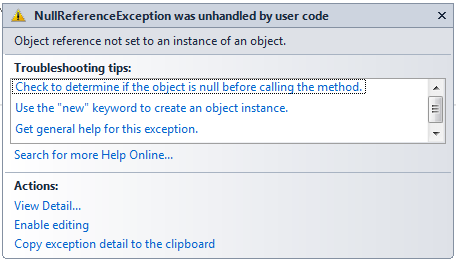
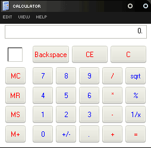
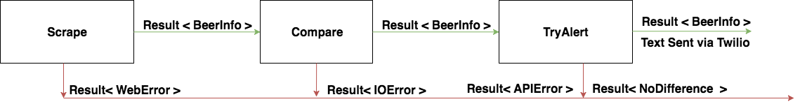
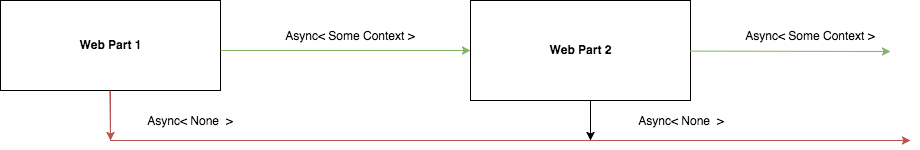

Beer, Meditation & Railway Oriented Programming
By Moko Sharma
About Me
-
Graduated [ May 2015 ]
-
Developer @ SIG [ August 2015 ]
-
Discovered F# [ December 2015 ]
-
Became an Enemy of Mutable State [ First Null Reference Exception ]

Agenda
-
ROP
-
Beer
-
Suave.IO
-
Meditation
Railway Oriented Programming
Exceptions, Exceptions Everywhere
What is ROP?
Is a..
Clean,
Functional,
Robust,
Way of Dealing with the Unhappy Path
The Model I
type Input = ...
type Result<'TSuccess, 'TFailure> =
| Success of 'TSuccess
| Failure of 'TFailure

The Model II
Goal: To Combine / Compose ROP Functions into a Robust Framework
Combiner 1: Bind [ >>= ]
Converts 1 Input - 2 Output Functions into 2 Input - 2 Output Functions
let bind switchFunction input =
match input with
| Success s -> switchFunction s
| Failure f -> Failure f
let (>>=) switchFunction input =
bind switchFunction input
Combiner 1: Bind [ >>= ]
let combineROPFunctions = ropFunction1 >> bind ropFunction2
let combineROPFunctions' input =
input
|> ropFunction1
>>= ropFunction2
Combiner 2: Switch [ >=> ]
Directly Joining ROP Functions
let switch switchFunction1 switchFunction2 input =
match switchFunction1 input with
| Success s -> switchFunction2 s
| Failure f -> Failure f
let (>=>) switchFunction1 switchFunction2 input =
switch switchFunction1 switchFunction2 input
Combiner 2: Switch [ >=> ]
let combineROPFunctions = switch ropFunction1 ropFunction2
let combineROPFunctions' = ropFunction1 >=> ropFunction2
Adapting Different Functions in this Model
Case 1: Database Write Functions
let writeToDatabase databaseWrite input =
try
databaseWrite input |> Success
with
| ex -> Failure ex.Message
Case 2: Mutators
let changeData dataChanger input =
dataChanger input |> Success
Case 3: Returns
let returnResult successCallback failureCallback result =
match result with
| Success s -> successCallback s
| Failure f -> failureCallback f
ROP View

Tired Hands Fun Fun
Timer Callback [ Happy Path ]
-
Scrape
-
Compare
-
Try Alert
scrape >=> compare >=> tryAlert
Errors / No-Ops [ Unhappy Path ]
-
Scrape - Web Errors
-
Compare - I/O Errors
-
Alert - API Errors
-
No Difference Found
type Errors =
| WebError of string
| IOError of string
| APIError of string
| NoDifferenceFound
ROP View

type BeerInfo = {ScrapeDateTime : Date; Beers : string list}
Libraries Used
Chiron for JSON
Logary for Logging
C# Twilio API
Next Steps
-
Deploy as an Azure Function
-
Manayunk Brewery + Others
-
Distribution of Updates - Machine Learning
Suave.IO

Is a ..
Non-Blocking,
Lightweight,
Functional-First,
F# Web Development Library
Web-Server Function

Web-Server Function

Request -> Response option
Request -> Async< Response option >
Simplified Suave Types - I
Request
type RequestType = GET | POST | .. type Request = { Route : string; Type : RequestType }
Response
type StatusCode = int type Response = { Content : string; StatusCode : StatusCode }
Simplified Suave Types - II
Context
type Context = { Request : Request; Response : Response }
Async Context
Context -> Async< Context >
Option Based Async Context
Context -> Async< Context option >
Simplified Suave Types Combined
type WebPart = Context -> Async< Context option >
Web-Part Combinators
let compose webPart1 webPart2 context : WebPart =
async {
let! firstResult = webPart1 context
match firstResult with
| None -> return None
| Some f ->
let! secondContextResult = webPart2 f
return secondContextResult
}
let (>=>) compose
ROP View
A Suave Web-Part Example
let OK content context : WebPart =
let response = { Content : content; StatusCode = 200 }
{ context with Response = response }
|> Some
|> async.Return
Combined:
( OK "All" ) >=> ( OK "Your" ) >=> ( OK "Base" ) ...
Filters
GET >=> path "/somePath" >=> OK "GET"
POST >=> path "/somePath" >=> OK "POST"
Remember..
type RequestType = GET | POST | ..
type Request = { Route : string; Type : RequestType }
From Web-Parts to Web Applications
let app : WebPart = choose [
GET >=> path "/resource1" >=> OK "r1: GET Success"
POST >=> path "/resource1" >=> OK "r1: POST Success"
path "/resource2" >=> choose [
GET >=> OK "r2: GET Success"
POST >=> OK "r2: POST Success"
]
]
startWebServer defaultConfig app
Meditation Fun Fun
Rest Resource
Talk Inspired by:
Scott Wlaschin's Railway Oriented Programming
Thank you!
Questions?